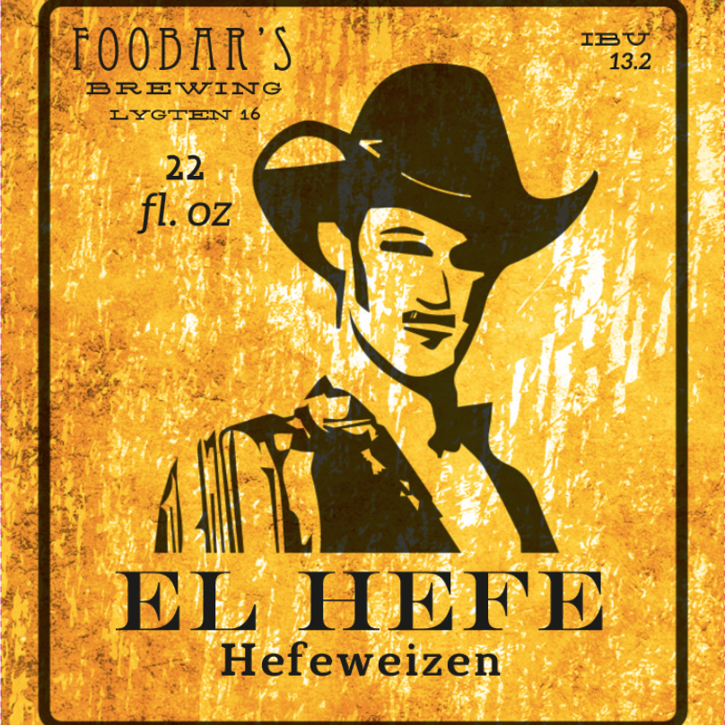
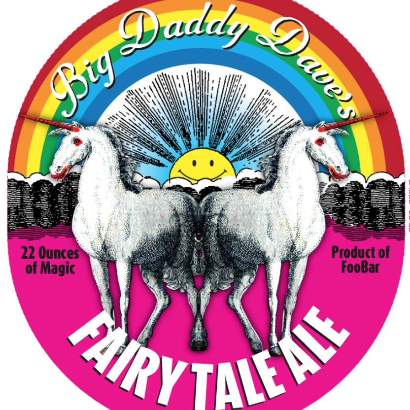
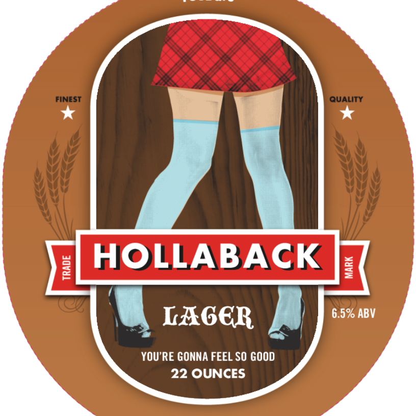
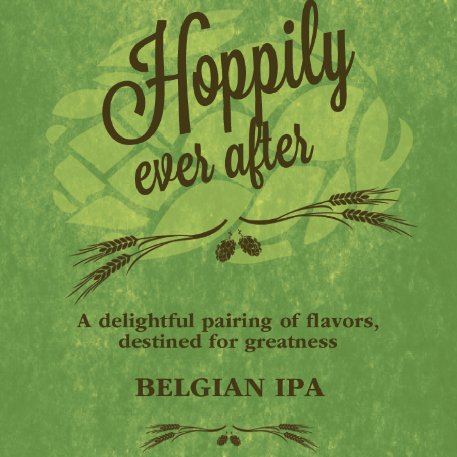
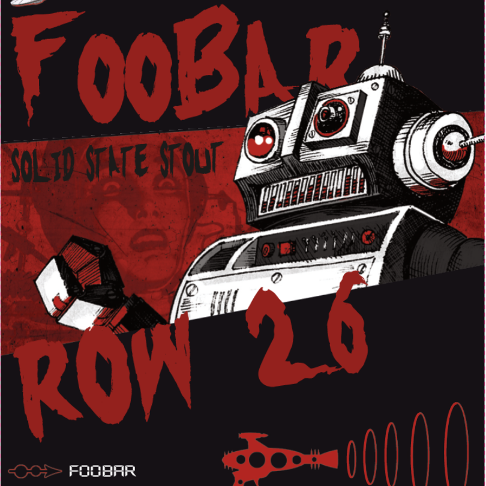
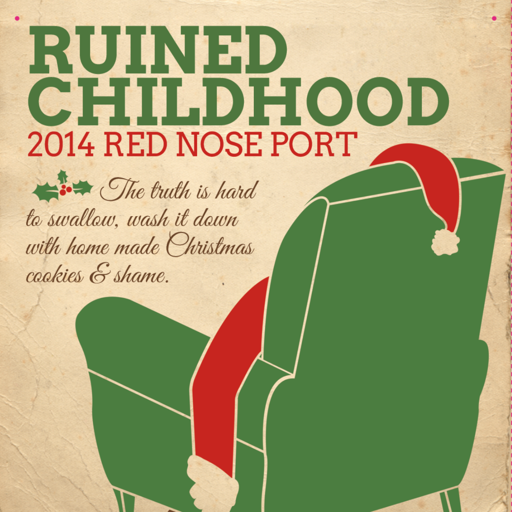
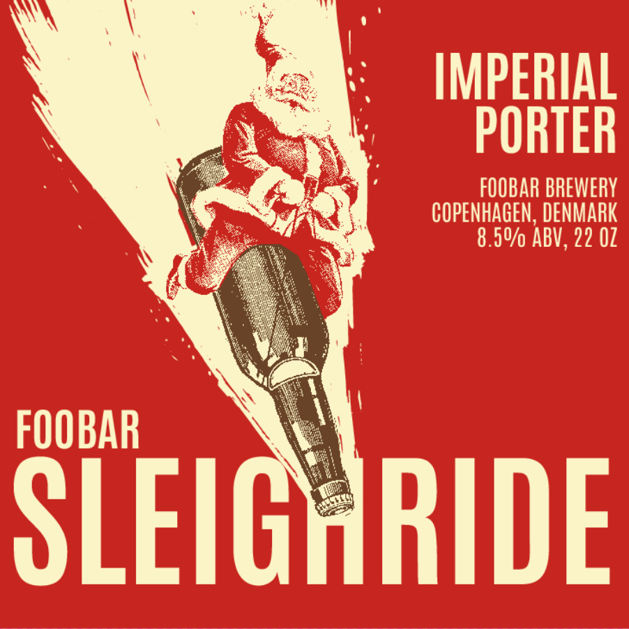
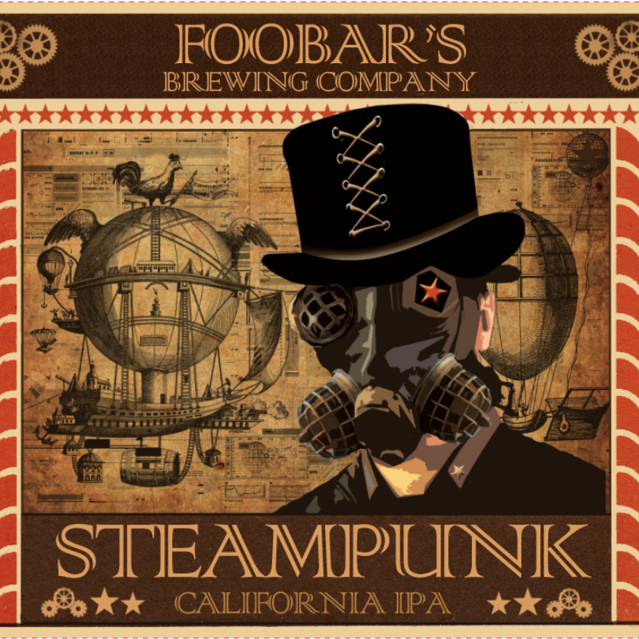

Følg din ordre her!
Ølstatus
l / l
Bliv inspireret til din næste øl her!
GitHop
IPA, 8,7%

"A decidedly hoppy and bitter, moderately strong American pale ale."
El Hefe
Hefeweizen", 5,4%
"Refreshing wheat or rye beers that can display more hop character and less yeast character than their German cousins."
Fairy Tale Ale
IPA, 7,9%
"A decidedly hoppy and bitter, moderately strong American pale ale."
Hollaback Lager
Oktoberfest, 6,5%
"Smooth, clean, and rather rich, with a depth of malt character. This is one of the classic malty styles, with a maltiness that is often described as soft, complex, and elegant but never cloying."
Hoppily Ever After
IPA, 4,5%
"A decidedly hoppy and bitter, moderately strong American pale ale."
Mowintime
European Lager, 4%

"Smooth, clean, and rather rich, with a depth of malt character. This is one of the classic malty styles, with a maltiness that is often described as soft, complex, and elegant but never cloying."
Row 26
Stout, 6,2%
"A hoppy, bitter, strongly roasted Foreign-style Stout (of the export variety)."
Ruined Childhood
Belgian Specialty Ale, 10%
"Variable. This category encompasses a wide range of Belgian ales produced by truly artisanal brewers more concerned with creating unique products than in increasing sales."
Sleighride
Belgian Specialty Ale, 8,5%
"Variable. This category encompasses a wide range of Belgian ales produced by truly artisanal brewers more concerned with creating unique products than in increasing sales."
Steampunk
California Common, 5%
"A lightly fruity beer with firm, grainy maltiness, interesting toasty and caramel flavors, and showcasing the signature Northern Brewer varietal hop character."